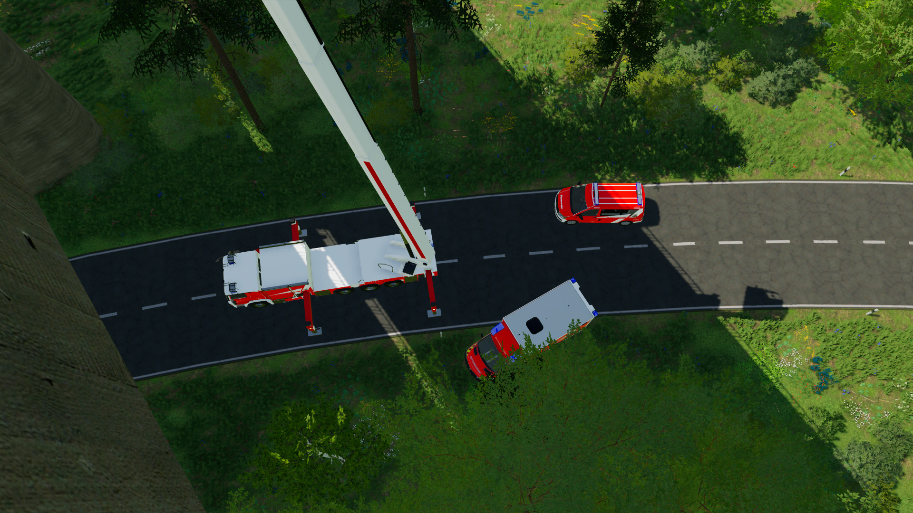

Hier finden Sie alle Informationen zu unseren Einsätzen, unserem Fuhrpark und vieles mehr!
Erfahren sie mehr über jegliche Neuigkeiten zu unserer Feuerwehr!
Aufgrund einer Übung an der Autobahnbrücke, wird bis zum 03.11.2024 gegen 13:00Uhr die linke Spur der Fahrbahn der A1 gesperrt. Hier finden Übungen der Feuerwehr statt.
Besuchen sie uns am 10.12.2024 ab 13Uhr auf dem Gelände der Feuerwehr Neusternberg!
Wir bieten ihnen: Getränke, Verpflegung und eine Fahrzeugaustellung unseres aktuellen Fuhrparks!
Erfahren Sie mehr über die aktuellen und vergangenen Einsätze der Feuerwehr Neusternberg.
Mehr erfahrenSehen Sie sich unsere moderne Fahrzeugflotte an, die für alle Arten von Einsätzen bereit ist.
Mehr erfahrenHier finden sie eine Quellenangabe der verwendeten Mods mit angegebenen Download Links. Bei Privatmods, stellen wir keinen Download.
Mehr erfahren